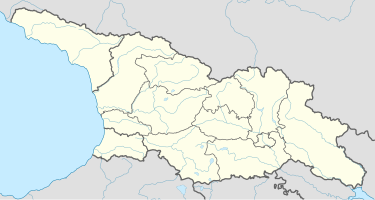

get to know georgia
კაცხის სვეტი — კირქვის სვეტისებრი დენუდაციური „მოწმე“ — შთენილი კლდე იმერეთის მხარეში ჭიათურის მუნიციპალიტეტის სოფელ კაცხში, მდინარეების კაცხურისა (ყვირილის მარჯვენა შენაკადი) და ღვითორის (ბუჯის მარცხენა შენაკადი) წყალგამყოფზე.
სვეტის სიმაღლე 40 მეტრია. ზოგიერთი მკვლევარი მიიჩნევს, რომ კაცხის სვეტი თავდაპირველად მონოფიზიტ განდეგილთა სამყოფელს წარმოადგენდა, თუმცა ეს მოსაზრება საყოველთაოდ არაა გაზიარებული, სათანადო არგუმენტაციის არქონის გამო. სვეტის ზედა ბაქანზე დგას ორი მცირე ზომის ეკლესია (დღეისათვის ისინი ნანგრევების სახითაა შემორჩენილი). ასეთ ადგილებში სამლოცველოების აგებას მკვლევრები უკავშირებენ მესვეტეობას, რომელიც VI საუკუნეში გავრცელებული იყო წინა აზიასა და, უპირველეს ყოვლისა, სირიაში, რომელთანაც ქრისტიანულ საქართველოს მჭიდრო ურთიერთობა ჰქონდა. ერთი ეკლესია (V ს.) მშრალადაა ნაშენი ადგილობრივად მოპოვებული, უხეშად დამუშავებული ქვით, აფსიდი კლდეშია გამოკვეთილი. მეორე (VI ს.) ნაგებია ქვემოდან აზიდული კარგად გათლილი კვადრებით, აქვს კრიპტა (ქვედა სართული — სამარხი). არავინ იცის ზუსტად როდის შეწყდა რელიგიური ცხოვრება კაცხის სვეტზე, მაგრამ ვახუშტი ბატონიშვილის დროს აქ ბერები აღარ მოღვაწეობდნენ.

კაცხის სვეტის არქიტექტურული ძეგლები 1944 წელს ალექსანდრე ჯაფარიძის ხელმძღვანელობით მთამსვლელთა ჯგუფმა ინახულა. ბოლო პერიოდამდე კაცხის სვეტზე ასვლა, ალპინისტური აღჭურვილობის გარეშე, შეუძლებელი იყო.
2007 წლიდან კულტურული მემკვიდრეობის დაცვის და გადარჩენის ფონდის დაფინანსებით დაიწყო სვეტზე არსებული ნაგებობების სარეაბილიტაციო სამუშაოები. კაცხის სვეტზე ასვლა აკრძალულია. გამონაკლის შემთხვევებში, ადგილობრივი ბერების ლოცვა-კურთხევით, სვეტზე მხოლოდ მამაკაცების ასვლაა შესაძლებელი. აღდგენილია სვეტის ძირში და თავზე არსებული სამლოცველოები, რაც სვეტზე ამჟამად მოღვაწე ბერი მაქსიმეს დამსახურებაა
2007 წელს კაცხის სვეტზე არსებულ ნანგრევებში მამა მაქსიმემ აღმოაჩინა კირქვის მცირე ქვათლილი (ზომები 41X21 სმ), რომელზეც ათსტრიქონიანი ქართული ასომთავრული წარწერაა ამოკაწრული. წარწერა პალეოგრაფიული ნიშნებით XIII საუკუნით თარიღდება. წარწერაში მოხსენიებულია ვინმე ფრიად ცოდვილი გიორგი, რომელსაც „სამი სახლაკი“ აუშენებია „ძელი ცხოვრებაზე“ — ანუ სვეტის თავზე დამკვიდრებულ დაყუდებულთათვის.[1]